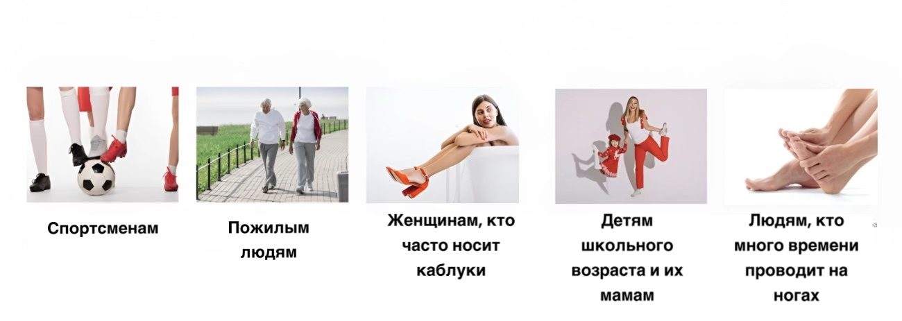
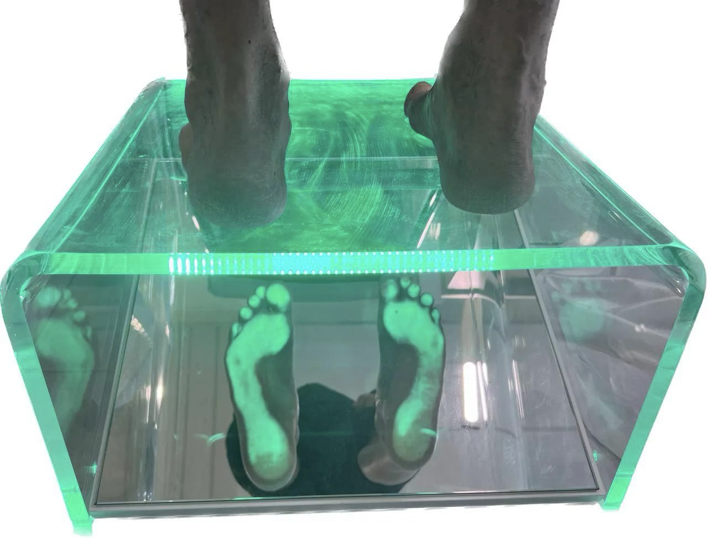
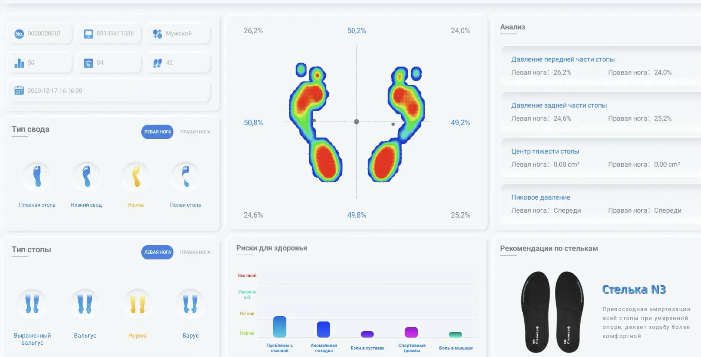
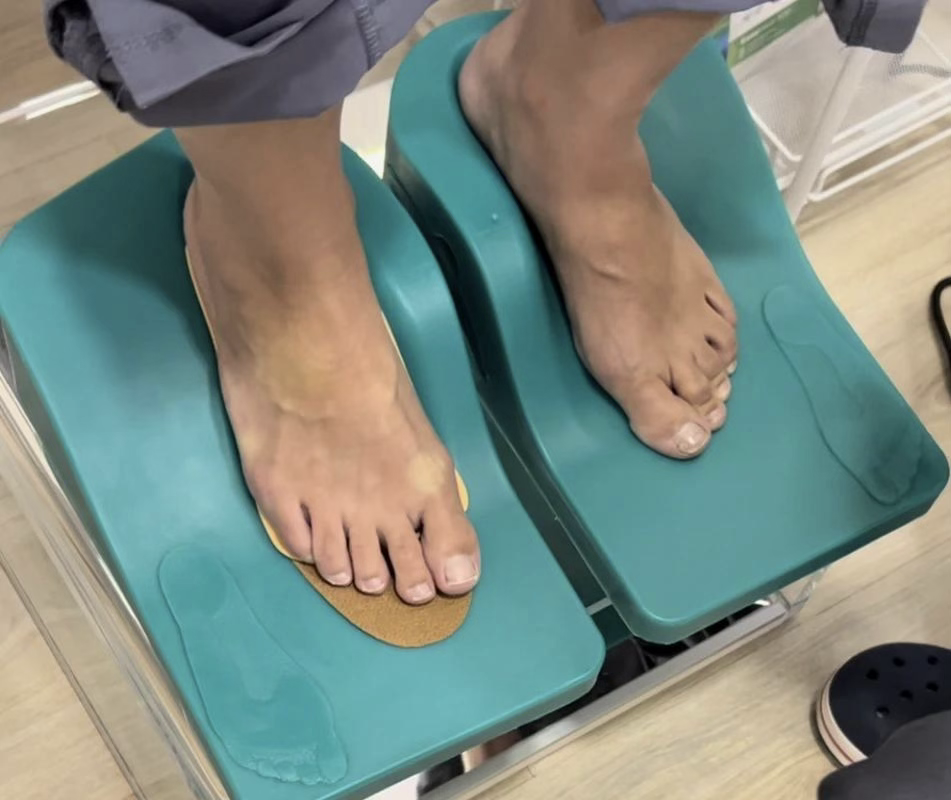
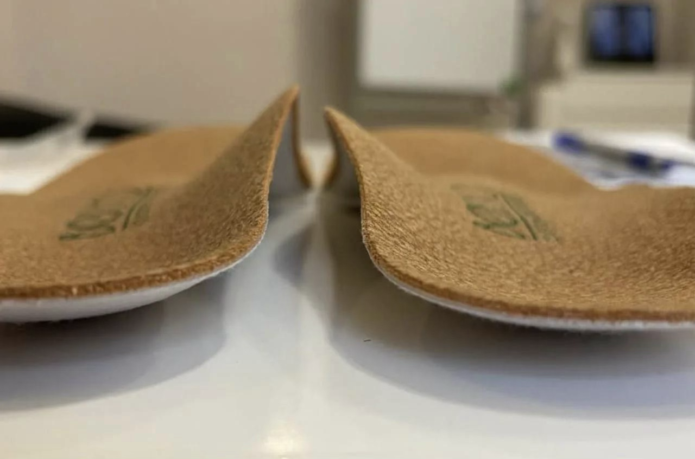

Индивидуальные стельки
Кому нужны индивидуальные стельки?
В целом, они рекомендованы каждому человеку, независимо от наличия проблем со стопами. В то же время, просто необходимы они становятся в случае:

- наличия плоскостопия любого типа;
- боли в спине, суставах при ходьбе;
- наличия мозолей, натоптышей и трещин;
- наличия травм стоп и других патологий;
- заболеваний связок и нервных стволов;
- частого ношения обуви на каблуке;
- работы на ногах;
- лишнего веса.
Почему стоит носить индивидуальные стельки
- Они учитывают все физиологические особенности стопы, так как специально изготовленная стелька является её естественным продолжением.
- Индивидуальные стельки равномерно амортизируют стопу, а значит ноги не устают в течение дня и после нагрузки.
- Они эффективны в профилактике и лечении изменений всех сводов стопы (как низкого, так и высокого).
- При изготовлении учитываются все анатомические особенности стопы, таким образом стельки безошибочно воздействуют на области, которые нуждаются в лечении.
Процесс изготовления занимает не больше 30 минут
Он проходит в 5 этапов:
- Диагностика давления стопы.
- Отчёт об особенностях вашей стопы.
- Подбор заготовки с учётом анамнеза и вашего образа жизни.
- Нагрев заготовки и формирование вашей индивидуальной стельки.
- Коррекция стельки и помещение в вашу обувь.
Адаптация стопы и суставов занимает 2–4 недели, после, по необходимости, мы снова делаем коррекцию.
В нашем центре вы можете пройти плантографию или интеллектуальное сканирование стоп. Процедура абсолютно бесплатна и занимает около 5 минут.


Часто задаваемые вопросы
Подходят ли индивидуальные стельки к моей обуви?
Индивидуальные стельки вставляются в любую обувь со съёмной стелькой — зимние ботинки, кроссовки, классические туфли. Специально покупать ортопедическую обувь не нужно. Подбор обуви под стельки обсуждается на консультации бесплатно.
Какой срок службы индивидуальных стелек?
На срок службы изделия влияет множество факторов: режим ходьбы, уход за изделием, особенности обуви и т. п. Практика показала — необходимость замены возникает в среднем через 360 дней.
Материал верха
Флиз.
Примеры работ


Запишитесь на приём
Оставьте заявку — мы свяжемся с вами и подберём удобное время.